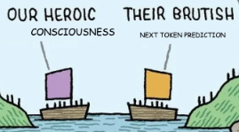

THE FRONT PAGE
EDITOR'S NOTE: As machine-generated volume quietly degrades the deliberate craft of software maintenance, the survival of reliable systems remains, as ever, a matter of individual discipline and conscious choice. #The compounding hidden labor required to sustain fragile software infrastructure amidst automated growth
A core utility demanding a gigabyte of RAM highlights how web-wrapper architectures continue to erode basic software discipline for minor deployment convenience. While modern hardware absorbs the bloat, it sets a troubling precedent for operating system overhead and resource prioritization.
Automated pull requests are clogging public repositories with syntactically valid yet unmaintainable boilerplate, shifting the burden of verification onto a dwindling pool of human maintainers. The short-term speed gain in feature output risks depleting the shared infrastructure that software reliability actually depends on.

By tracking line-level diffs during iterative LLM rewrites, researchers offer a method to preserve attribution and audit automated copy edits. The system trades fine-grained token tracking for manageable compute overhead, though non-linear structural rewrites still obscure where machine suggestions end and human authorship resumes.
An open-source project replaces black-box agent orchestrators with a inspectable courtroom jury, tracing how peer-to-peer message topologies directly alter final votes. While the framework brings much-needed protocol discipline to agentic messaging, exposing state transitions per interaction compounds latency and token overhead significantly.
By stripping away track controls and compressor settings in favor of an editor-style interface, Airy offers instant text-to-speech iteration for rapid content production. The design prioritizes generation speed over fine-grained prosody control, continuing a broader shift that hides underlying audio craftsmanship behind stripped-down abstractions.
MODEL RELEASE HISTORY
No confirmed model releases were detected for this edition date.